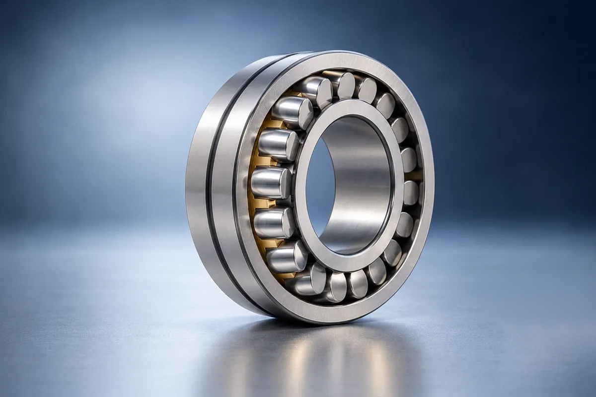

INDUSTRY APPLICATION
Bearings for Tube & Wire Straightening.
Taper roller bearings are engineered for precision straightening of tubes and wires. Common applications include tube straightening machines, wire drawing lines, cold drawing mills, steel tube plants and precision tube manufacturing.
Ask about your application ↗
PRODUCT RANGE
Bearings for this industry
Product associations below are commonly used in these applications; they are not machine-specific recommendations. Confirm the exact specification with our team.


URB metallurgical bearing range
URB cylindrical and spherical roller bearings are commonly used in selected rolling and wire processing applications. Confirm the exact designation, dimensions and machine position before selection.
Hot strip millWire millStraightening rollersCold pilger mill
A SIMPLE PROCESS
How to order
Send your requirement
Share the bearing number, size or application.
We confirm
We check the exact specification with you.
We arrange supply
We confirm the next steps for your requirement.
COMMON QUESTIONS
Enquiries for Tube & Wire Straightening
Which bearing families are commonly used in Tube & Wire Straightening?
The page lists product families commonly considered for Tube & Wire Straightening. The required design depends on the equipment position and operating conditions.
What information should I send for a product enquiry?
Send the complete bearing number or dimensions, the machine application, required quantity and destination country.
Can Premach confirm the exact fit?
Share a drawing or existing part reference so the specification can be checked. Final fit must be confirmed for the specific equipment.
Related industries
Need bearings for Tube & Wire Straightening?
Send us the machine and bearing details.
Continue on WhatsApp ↗